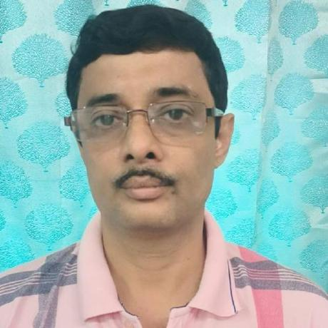

22+ years of experience in Oracle, MIS, Data Analysis and Software Development.
Experienced technology professional with expertise in Oracle 11g DBA, PL/SQL, AI, Data Science, MIS Reporting, Website Development and Training.
Professional Profile Supratim, an MCA & OCA DBA, has 22+ years of experience in Oracle 11g, MIS and Data Analysis. He is currently working with SSM, Kolkata as an MIS-In-Charge. He is experienced in supporting Oracle DBA, PL/SQL, Software Development, Website Development. Finally, Data Analysis and all types of MIS reports generation. His core competency lies in Oracle Technologies (Oracle 11g, PL/SQL, DBA and APEX) , Data Analysis and Data Visualization. He has also been performing as a training expert in SSM. Recently he is also attached with teaching Artificial Intelligence, Cybersecurity and Data Science and conducting seminar on Artificial Intelligence (AI) and Cybersecurity.Professional Qualification
1) MCA (2003), 70.16 % from Vidyasagar University, West Bengal.(Regular Course)
2) OCA DBA (2009), 87.56 %, Oracle University. (Online Exam)
3) ARPIT, SWAYAM course (Online CBT Exam-2020)-Data analysis for social science teachers.(56%)-University of Hyderabad
Recent Accomplishments
Online Courses: -
1) CS50s Introduction to Cybersecurity, 2024, Harvard University
2) Ethical Hacking Essentials (EHE), 2024, EC-Council
3) Digital Forensics Essentials (DFE),2024, EC Council
4) Introduction to Soft Computing, 2020, SWAYAM, NPTEL, IIT, Kharagpur
5) Cloud Computing 2020, SWAYAM, NPTEL, IIT, Kharagpur
6) Machine Learning 2020, Tata Steel
7) Basic TQM, 2020, Tata Steel
8) Industry 4.0 , 2020, Tata SteelWritten Some Books: - 1) Computer Application In a Nutshell Vol-1, April 2020, Amazon( Kindle & Paperback). 2) Object Oriented Programming (OOP) Tutorial - Vol 1 : Basics [Java and BlueJ] ,2020, Amazon(Kindle). 3) Learn HTML and CSS: Web page design- June, 2021. 4) Artificial Intelligence and data science (AIDS) for HS, WBCHSE, RSP Technical Skills Languages : SQL, PL/SQL, HTML, C, C++, Java, Python, PHP Databases : Oracle 11G, Sqlite3, MySql, Ms Access 2007/10,etc Platforms : Windows 2012 Server, Windows 11, Ubuntu 22.04.3 Tools : Oracle SQL Developer, Oracle Apex , WordPress, CSS, BlueJ etc Some Works Project 1 : Development and Implementation of Website for SSM Kolkata. Role: DBA and programming. Project 2 : Development of Civil Works Software, Role : Programmer (Database + Front end) Activity 1 : Installation and upgradation of Oracle 11g from 9i. Activity 2 : Installation of Oracle 11g Express Edition in Ubuntu LINUX. Activity 3 : Research and data analysis of Impact study of ICT in Education. Activity 4 : Prepared Cyber Security Guideline for students and teachers. Activity 5 : A research paper on Quality Education, published in https://udise.in by NUEPA, New Delhi. Soft Skills · In the Position of MIS-In-Charge, Leading, Motivating MIS team members. · Looking after & coordinated some Workshops to guide/train Information Acquisition process, teachers training for Computer Aided Learning (CAL). · Attended many National level workshops regarding to DBMS, MIS, CAL, and Research Activity. · Used GIS software to point Schools, Wards and Boroughs in Kolkata. Job Illustration Present: (June 2004 Till Date) Position à MIS-In-Charge. Responsibilitiesà Oracle 11g DBA, Software Development, MIS reporting & etc. Organization àSamagra Shiksha Mission, Kolkata (A joint project of State & Central Govt), 27A Bosepukur Road,Kasba,Kolkata-42. MCA last Semester Project: Project Name: Recognition of Composite Objects Using Mathematical Simulation and reconstruction with data compression. Venue: E.C.S.U, Indian Statistical Institute, Kolkata. Details: Language àC, O.SàWindows Me. Duration - 6 months. Educational details Professional Qualification: § ARPIT SWAYAM course (Online CBT Exam-2020)-Data analysis for social science teachers. -University of Hyderabad § OCA DBA (2009), 87.56 %, Oracle University, Online Exam. § Master of Computer Application (MCA),First Class(70.16%), 2003, Regular, Vidyasagar University. Academic Qualifications: § B.Sc., Mathematics (Honors with Economics and statistics) 1999 University of Calcutta Personal details E-Mail : supratimmis@gmail.com, supratim610@gmail.com Year of Birth : 1978 Fathers Name : Mr. Rabindra Nath Chakraborty Mothers Name : (Late) Mrs. Rama Chakraborty Co-curricular · Certificate awarded for 3-days training programme(12th to 14th February 2008) on SSM planning process, imparted by National Institute of Administrative Research, Lal Bahadur Sasthri National Academy of Administration(LBSNAA), Mussoorie, sponsored by MHRD, Govt of India. · Third Place winner of an open stage Quiz Contest in Kalikapur, Paschim Medinipur, 2003. · Hobby of writing Bengali poem, one poem published in each of Nabankur, Dinkshan,Nandam (some little magazine), Kolkata. · My one poetry book Bristi Namuk Tarpor Published by Ramkrishna Sarada Publication,Kolkata. · Participation Certificate awarded from Tally(India) Pvt. Ltd, · Participation Certificate awarded from NUEPA(jointly organized by UNICEF, National University of Educational Planning and Administration and SSA), · Hands on course completion Certificate awarded from SQLSTAR on Oracle 9i DBA. · Participation Certificate awarded for: Cyber Wellness Olympiad 2018-19; LearnWithJoy YouTube Channel (containing some video lecture on 1) Computational Mathematics: Optimization-Introduction 2) Statistical Data Analysis 3) OOP concepts with Java and BlueJ 4) MS Office in Bengali Language). Snap of some Certificates: